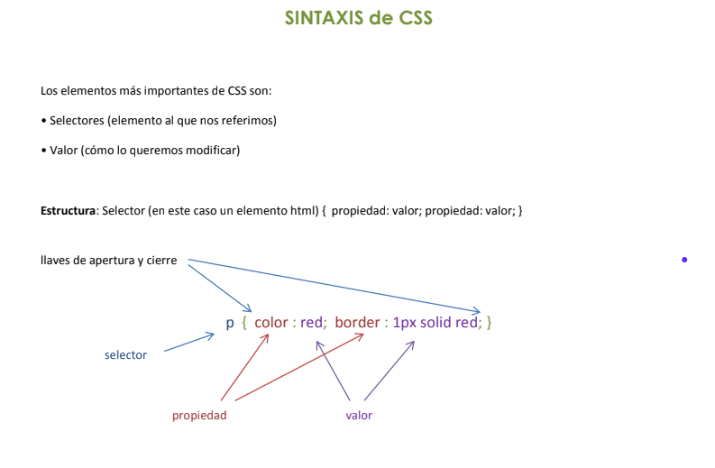
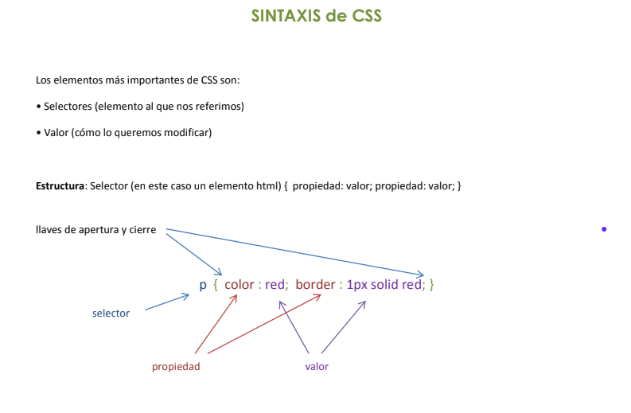

Objetivo
Esta asignatura se ocupa de estudiar las características de los sistemas de información y sus relaciones con la organización. Se entiende que las organizaciones son organismos que generan, almacenan y transforman los conocimientos que le permitan adaptarse al entorno a su beneficio. Pero, además, se considera que los sistemas de información son un componente clave de las organizaciones dado que los mismos permiten procesar la información y ello impacta en la manera de trabajar, en la cultura y en la estrategia de las organizaciones. De esta manera, esta materia brinda conocimientos que les permiten a los futuros profesionales afrontar el análisis, diseño, implementación y control de los sistemas de información que componen una organización.
Capacidades profesionales
Se espera que al finalizar el cursado de este módulo los estudiantes sean capaces de:
- Comprender los conceptos de la Teoría General de Sistemas y su aplicación al área informática de una organización.
- Conocer los aspectos y características de los sistemas de información que sirven al desarrollo de las organizaciones.
- Comprender los procesos y características de las organizaciones.
- Reconocer el rol del analista de sistemas en la organización.
Ejes de contenidos
Teoría general de los sistemas. Concepto de Sistemas. Jerarquía sistémica. Los sistemas de información, relevancia, vigencia, consistencia. Ciclo de vida de los sistemas. Las estructuras: datos, información y conocimiento. Integración de los sistemas de información en las organizaciones. Información como herramienta para la toma de decisiones. Arquitectura de un sistema, diseño, modelos y métodos. La organización: definición y modelos. Estrategias. Planificación, organización y control. Características, concepción, diseño y complejidad de los sistemas organizacionales. Análisis de los sistemas funcionales de las organizaciones. El control interno en las organizaciones. Modelos de procesos y las organizaciones. Reingeniería de procesos. El conocimiento en las Organizaciones. El rol del profesional en sistemas en la organización. Privacidad, Integridad y Seguridad.
 



Contenidos vistos
- HTML (basico)
- CSS (basico)
- Git y GitHub (basicos)
Como en otras paginas nos dedicamos a detallar sobre HTML y CSS de forma unica, en esta pagina vamos a profundizar sobre el uso de Git y Github
Git
Git es un software de control de versiones diseñado por Linus Torvalds. Su propósito es llevar un registro de los cambios realizados en archivos digitales y coordinar el trabajo que varias personas realizan sobre estos
Control de versiones
El control de versiones es la principal característica de Git. Git ofrece herramientas para poder gestionar cada una de las etapas y versiones por las que va transitando un proyecto de desarrollo de software favoreciendo el desarrollo colaborativo.
Desarrollo colaborativo
El desarrollo colaborativo es un modelo basado en la disponibilidad pública del código y la comunicación vía internet. Proporciona herramientas para que un gran número de individuos puedan hacer desarrollo en conjunto.
Repositorio
Un repositorio en este caso, es un espacio virtual, utilizado para el almacenamiento de archivos de todo tipo. En Git, este repositorio se define y organiza en la carpeta .git que debe estar dentro de nuestro proyecto. Esta carpeta permite rastrear los cambios realizados creando un historial a lo largo del ciclo de vida de nuestro proyecto.
Branch o rama
Un branch o una rama hace referencia a un área de trabajo. La rama inicial por defecto es “master” o “main”, este nombre se puede configurar tanto en la instalación de git o posteriormente desde la línea de comandos. La cantidad de ramas son ilimatadas, se pueden crear, modificar y eliminar dentro de un repositorio de git.
GitHub
GitHub es el host de almacenamiento de repositorios Git más grande y es el punto central de colaboración de millones de proyectos y desarrolladores. Un gran porcentaje de repositorios Git están alojados en GitHub y muchos proyectos open-source lo usan como almacenamiento, registro de problemas (issue tracking), revisión de código y otros.
Fork de un proyecto
Un fork de un proyecto se realiza para poder colaborar en proyectos cuando no se tienen permisos de escritura (push access). El fork se realiza desde GitHub, el cual realizará una copia entera del proyecto en nuestra cuenta de usuario, de esa manera, se podrán realizar cambios.
Mas sobre Git y GitHub